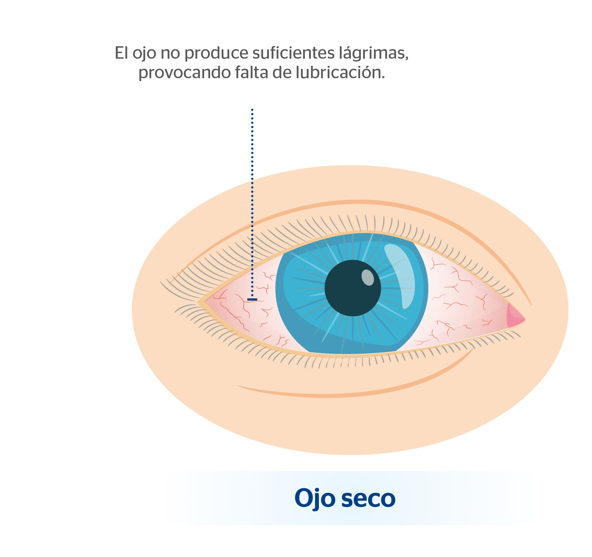
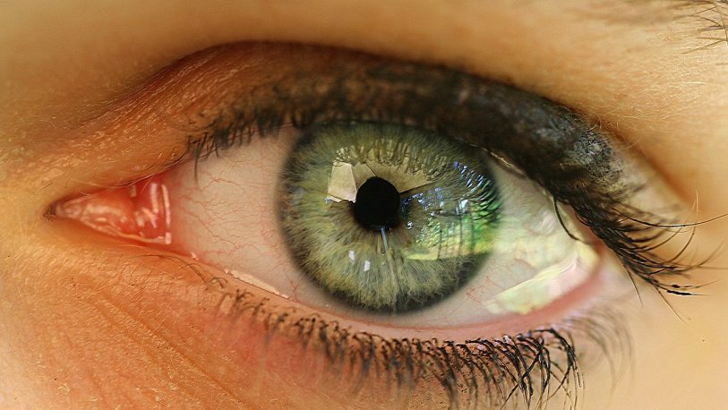

La Fatiga visual (también llamada astenopia) ocurre cuando los ojos se esfuerzan en exceso durante períodos prolongados, especialmente frente a pantallas, bajo ma…Fatiga visual (también llamada astenopia) ocurre cuando los ojos se esfuerzan en exceso durante períodos prolongados, especialmente frente a pantallas, bajo mala iluminación o realizando tareas de enfoque continuo.
Sus síntomas más comunes son:
Es especialmente frecuente en quienes pasan muchas horas con la vista fija en pantallas o realizando tareas visuales de precisión. No tiene una diferencia marcada por sexo, aunque sí varía según el estilo de vida y el entorno laboral.
Los grupos con mayor riesgo son:
Adoptar buenos hábitos ergonómicos y hacer pausas activas son las formas más efectivas de prevención.

Asegurarse de tener buena luz ambiente, sin reflejos en la pantalla.
Mantener la pantalla a unos 50-70 cm de los ojos.
Hacer pausas cada 20 minutos mirando a lo lejos.
Cada 20 min, mirar un objeto a 6 metros por 20 segundos.
Ajustar el brillo y contraste de la pantalla según el entorno.
Configurar el modo noche en el dispositivo para utilizar colores más calidos.
Dormir las horas necesarias para permitir la recuperación ocular.